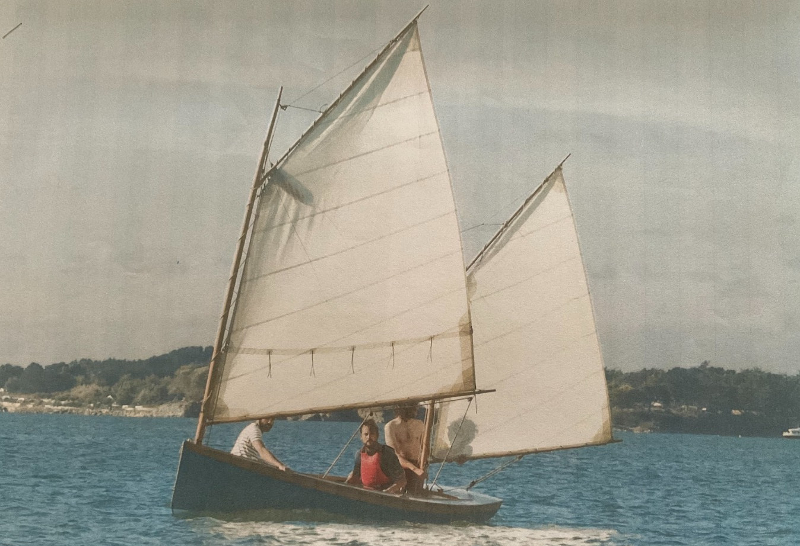

Coquina
- Construit chez Skol Ar Mor
- Plan N. Herreshoff (revu par F. Vivier)
- Construction bordé franc, en mél√®ze et chêne.
- Gréement cat ketch
- Longueur hors-tout - 16' 8" - 5.08 m
- Bau max - 61" - 1.55 m
- Tirant d'eau, 8" dérive haute, 36" dérive basse (0.20 m, 0.91 m)
- Déplacement - avec le gréément, 450 lbs ~ 200 kg
Plans d'étude
Diverses informations, travaux en cours, etc...
Polish des cabillots
(À suivre...)
Plus d'infos...
Référent : Olivier Le Diouris
Programme du bateau
- 26 mai au 1er juin 2025, Semaine du Golfe
-
À suivre...